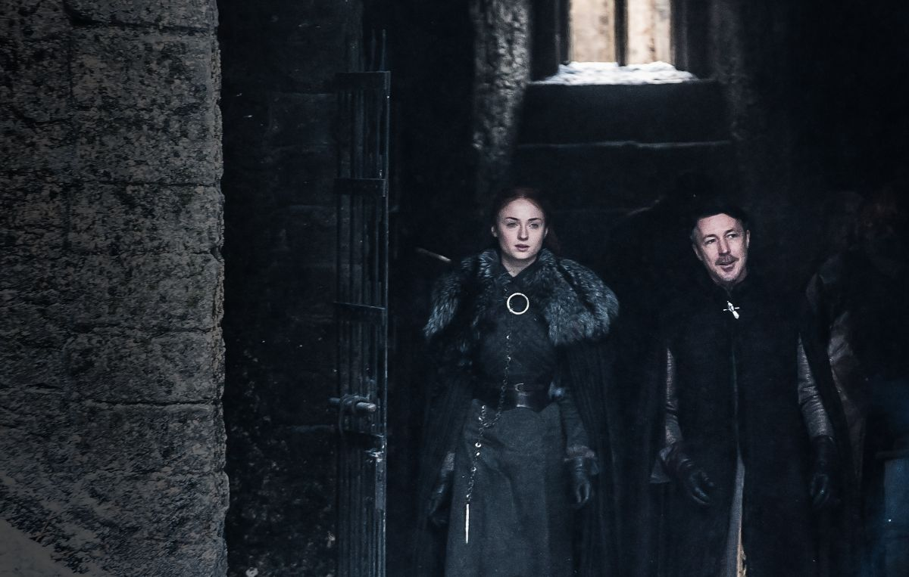

7ª TEMPORADA
Episódio 01 –Dragonstone
Sinopse: Jon Snow organiza a defesa do Norte. Cersei tenta ficar quites. Samwell descobre uma informação importantíssima. Daenerys chega em casa.

Episódio 02 – Stormborn
Sinopse: Daenerys recebe uma visita inesperada. Jon enfrenta uma revolta. Sam resolve arriscar sua vida e sua carreira. Tyrion planeja conquistar Westeros.
Episódio 03 – The Queen’s Justice
: Sinopse: Daenerys cerca-se de admiradores. Tyrion se infiltra. Cersei devolve um presente. Jaime aprende com seus próprios erros.

Episódio 04 – The Spoils of War
Sinopse: Os Lannisters pagam suas dívidas. Daenerys pondera suas opções. Arya volta para casa.
Episódio 05 – Eastwatch
Sinopse: Daenerys apresenta uma nova saída. Arya fica desconfiada. Tyrion responde a uma boa pergunta.
Episódio 06 – Beyond the Wall
Sinopse: Jon e a Irmandade Sem Bandeiras saem à caça dos mortos. Arya confronta Sansa. Tyrion reflete sobre o futuro.
Episódio 07 – The Dragon and the Wolf
Sinopse: Tyrion tenta salvar Westeros de si mesma. Sansa questiona a lealdade dos seus.